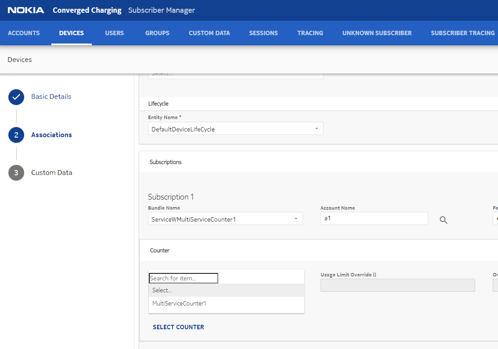
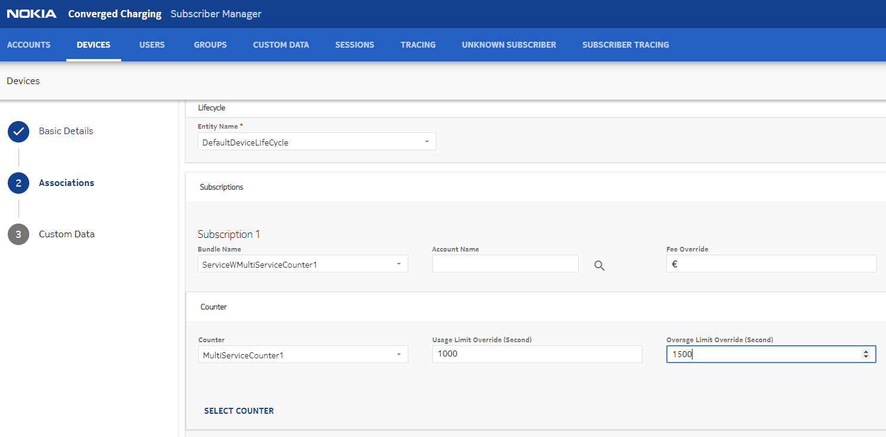
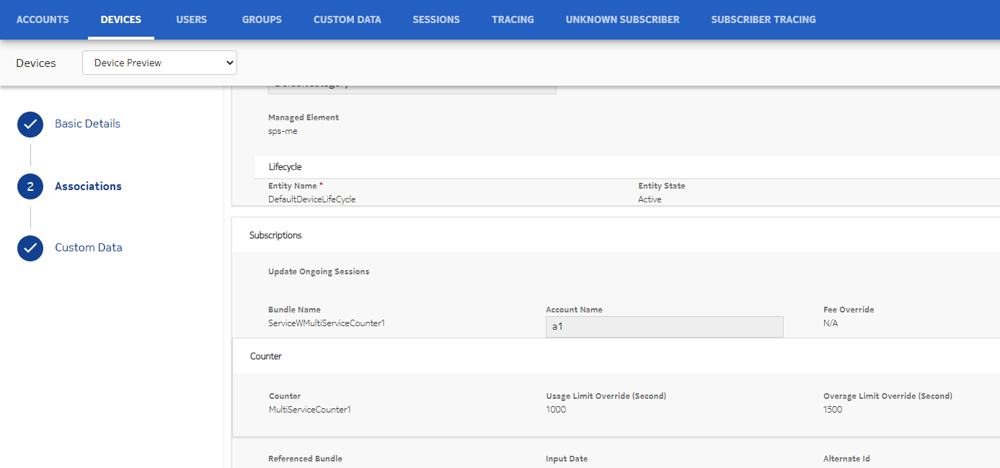
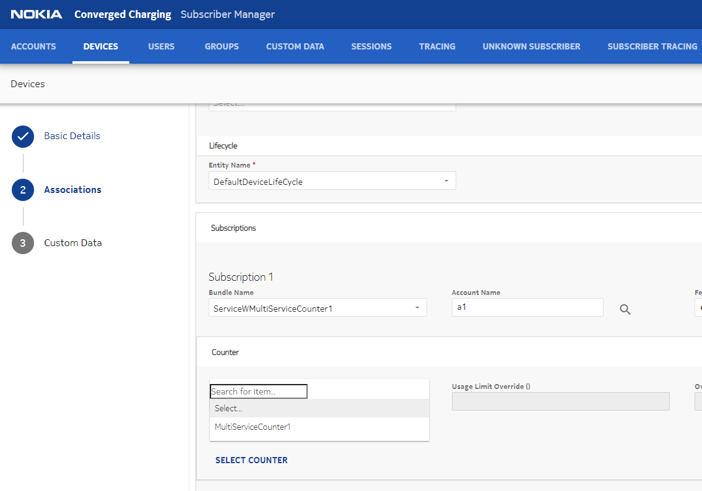
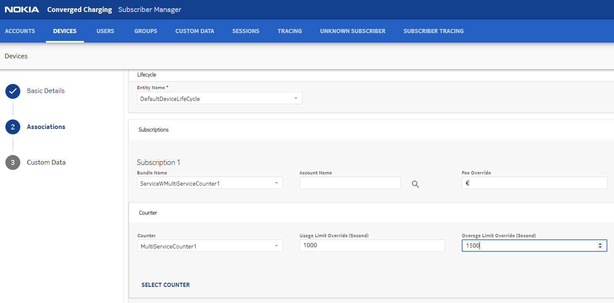
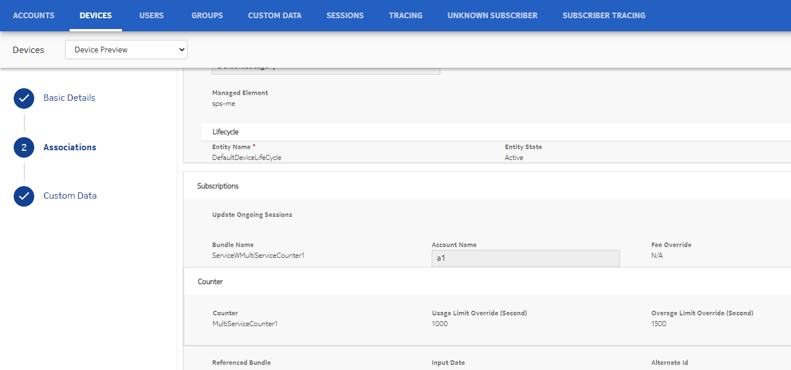

Subscription customization (template) provides the following capabilities:
- While attaching a subscription to a device or group, the operators can customize the subscription by overriding the parameters from the existing subscription. This can be done by setting the subscriptionCustomise flag to True in the create/Device or create/Group API. The values not sent in the request are picked from the bundle definition.
- After creating a subscription, if an operator wants to update the bucket instances in that subscription, then the update/BucketInstance API is used.
 Note:
Note:Template APIs
- Override bucket and counter values by specifying buckets and counters directly under bundle.
- Override bucket initial value with incremental and decremental mode.
- Override the values temporarily for a specified amount of billing cycles.
- Override bucket carry-over parameters, such as carry over percentage, carry over validity, maximum carry over amount, consumption order, and so on.
- Override service (bundle) custom data.
- Create Group API: This API allows creation of a Group with a
subscription.
/services/ServiceManager/subscriber/create/Group - Update Group API: This API allows you to update a Group with a
subscription.
/services/ServiceManager/subscriber/update/Group - Delta Update Group API: This API allows you to update of a Group with
a subscription.
/services/ServiceManager/subscriber/deltaUpdate/Group - Create Device API: This API allows creation of a Device with a
subscription.
/services/ServiceManager/subscriber/create/Device - Update Device API: This API allows you to update a Device with a
subscription.
/services/ServiceManager/subscriber/update/Device - Delta Update Device API: This API allows you to update a Device with
a subscription.
/services/ServiceManager/subscriber/deltaUpdate/Device - Create Subscription API: This API allows creation and addition a new
subscription and also allows bundle customization. It allows creation of
subscription with overridden values.
/services/ServiceManager/subscriber/create/Subscription_v1 - Create Profile API: This API allows creation of the Subscriber
Profile. This API can be used to create an Account, a User, a list of
Devices or a Group, a list of subscriptions with overridden values
associated with each other. All the subscriptions are charged on the same
account that is also created with this API.
/services/ServiceManager/subscriber/create/Profile - Add Profile API: This API adds devices and subscriptions to a
Subscriber Profile for a given Account. It also allows creation of a device
and subscription with overridden values and associate it with existing
account. If groupId is present in the request, the newly created devices and
device in existingDeviceIds can be attached to the group.
/services/ServiceManager/subscriber/add/Profile - Update/Change Plan API: This API changes the plan (add new
subscription) to a device or group. It also allows you to replace an
existing subscription with a new subscription created with overridden values.
/services/ServiceManager/subscriber/update/ChangePlan
NCC allows overriding maxRenewals using the template APIs. Following example shows how the maxRenewals attribute is specified in the template APIs:
.
.
.
"bundle": {
"name": "Bundle1",
"maxRenewals": 2,
.
.
.If the maxRenewals attribute is not specified in the template APIs, then the value of maxRenewals is taken from the bundle catalog. If the maxRenewals is set to -1, then it is considered as unlimited value.
NCC provides an option to override bucket and counter values. The buckets and counters can be specified directly under bundle without specifying the charging service. See the following example:
{
...
...
"subscriptions": [
{
"subscriptionCustomise": true,
"bundle": {
"name": "BundleTest",
"buckets": [
{
"name": "Bucket1",
"initialValue": 800,
"currentValue": 800,
"thresholdProfileGroupIdList": [
"T2"
]
}
],
"counters": [
{
"name": "Counter1",
"thresholdProfileGroupIdList": [
"TPG2"
],
"overageThresholdProfileGroupIdList": [
"OTPG2"
],
"usageLimit": 25,
"overageLimit": 30
}
]
}
}
]
...
...
}- SET: Sets an absolute value
- INCR: Increase the values by delta
- DECR: Decrease the values by delta
- NONE: No mode
See the following example:
{
...
...
"subscriptions": [
{
"bundle": {
"name": "BundleTest",
"buckets": [
{
"name": "Bucket1",
"initialValue": 100,
"currentValue": 100,
"initialValueAdjMode": "INCR"
}
]
}
}
]
...
...
}Navigate to Devices or Groups and add a new subscription under Associations. From the bundles, select the bundle that contains a multi-bundle counter. In the following snapshot, ServiceWMultiServiceCounter1 is the selected bundle.
 Click SELECT
COUNTER and from the list select the counter. Here, MultiServiceCounter1
is selected. This counter is a multi-bundle counter found in a charging logic attached
to the selected bundle.You can override
the values of selected counter. Here, Overage Limit Override (Second) value is
changed.You can display the counter and
its overridden value from the preview page as follows.
Click SELECT
COUNTER and from the list select the counter. Here, MultiServiceCounter1
is selected. This counter is a multi-bundle counter found in a charging logic attached
to the selected bundle.You can override
the values of selected counter. Here, Overage Limit Override (Second) value is
changed.You can display the counter and
its overridden value from the preview page as follows.{kind=link}
{kind=link}
{kind=link}
create/Device or create/Group REST API
The operators can customize a bundle using the create/Device or create/Group API while attaching a subscription to a device or group. If the subscriptionCustomise flag is set as True, then the operators customize only the lifecycle and charging service in a bundle.
Note:- You cannot add a new charging service but only use the existing charging services from the original bundle definition.
- With customization, the bucket/counters values can be modified. As a result, if a threshold is defined on absolute value, then it may not generate the expected result. Therefore, it is recommended to define threshold levels in percentage.
The create/Device or create/Group API can modify the following data:
-
Lifecycle (entity or periodic) attached with a bundle definition.
-
Counter threshold profile group, overage threshold profile group, usage limit, and overage limit present in the charging logic (charging service) list.
-
InitialValue, CurrentValue, currentChargingStep, threshold for buckets, and carry-over parameters present in the charging logic (charging service) list.
-
All or certain charging service can be selected in the bundle definition.
For the complete list of parameters and their descriptions, see the NOKIA Converged Charging Service Manager API Reference Guide.
Setting InitialValue, CurrentValue, and currentChargingStep for a bucket with or without a Charging Step
-
If currentChargingStep is provided in the request, but bucket does not have a Charging Step, then the request is rejected with an error.
-
If currentChargingStep is not provided in the request and bucket has a Charging Step, then CurrentValue and InitialValue are set to the size in step 1 of the Charging Step.
-
If currentChargingStep is provided in the request and bucket has a Charging Step, then if the currentChargingStep is greater than the number of steps in the Charging Step (with the last step as not unlimited), the request is rejected with an error. If currentChargingStep is less, then the following logic is used:
-
If InitialValue is available in the request, then the request is rejected with an error. The InitialValue is calculated internally as follows:
-
For a Charging Step that has last step as not unlimited: Sum of steps starting from step 1 till currentCharging Step.
-
For a Charging Step that has last step as unlimited: Sum of steps starting from 1 until step before unlimited step, plus the number of times unlimited step has been used.
-
-
If CurrentValue is available in the request, then this value is set only when it is less than current charging step size.
-
If current value is not available in the request, then it is set as follows:
-
For a Charging Step that has last step as not unlimited: current step size.
-
For a Charging Step that has last step as unlimited, it is set as follows:
- If current charging step < number of steps: current charging step size.
- If current charging step >= number of steps: last step size.
-
-
Example: Creating a device and attaching a subscription
The following figure shows an example where an iPhone device is created with two buckets. The create/Device API is used to change the initial value of the existing bucket (Bucket1) to 300 bytes. Note that the subscriptionCustomise flag is set as True.
update/BucketInstance REST API
The operators can update the following bucket instance parameters using the update/BucketInstance API:
- Bucket initial value
- Bucket current value
- Carry-over parameters
- Current charging step
Previously, for temporary updates, the adjust mode and delta value existed in the database until the number of temporary cycles were reached. For permanent updates, the adjust mode exists as None and the delta value as 0 and the adjusted amount is stored in the original value field.
Note:- Bucket value cannot be higher than the initial bucket value. During a call, if the charging step decreases, then this condition is disregarded, and the bucket value gets adjusted.
- The charging step cannot move out of configured steps.
- The charging step = 0 or negative value is not allowed.
-
The new initial value can be greater or lesser than the original value.
-
The new bucket initial value can be permanent (set adjustAmountInitialValidity parameter to zero) or temporary (set adjustAmountInitialValidity to any positive value greater than zero).
-
Zero indicates that the given initial value remains forever, this is also the default value.
-
Any positive value indicates the number of bill cycles (including the current bill cycle) for which the given initial value remains valid. A value of 1 means that the given initial value is valid only for the ongoing bill cycle and is replaced by the original initial value at next BCR.
For example, adjustAmountInitialValidity = 3, initialValue = 1000, and origInitialValue = 1200. The initial value is valid for current bill cycle and two further bill cycles. After which, the initialValue falls back to 1200.
-
For the complete list of parameters and their descriptions, see the NOKIA Converged Charging Service Manager API Reference Guide.
 Notice:
Notice:For the complete list of parameters and their descriptions, see the NOKIA Converged Charging Service Manager API Reference Guide.
update/Subscription and update/EntityCounterInstance REST API
To update a counter instance in a given subscription, operators can use either of the following APIs:
/services/ServiceManager/subscriber/update/Subscription/services/ServiceManager/subscriber/update/EntityCounterInstanceTo retrieve the counter instance information, operators can use the following API:
/services/ServiceManager/subscriber/getData/EntityCounterInstanceNCC considers the remainingRenewals value with versioning and impact of its value to the max renewal. Following example shows the remainingRenewals value:
{
"entityId": "group1",
"entityType": "GROUP",
"subscriptionId": "459e89bc-beb0-46bb-9559-090a1c4259b3",
"remainingRenewals": 4
}The update subscription API can update the remainingRenewals for an existing subscription to be UNLIMITED. That is, if the subscription is created with a defined number of renewal cycles, then NCC allows the remainingRenewals to be set to UNLIMITED.
Shortening the update subscription API cycle
Note:- In case of shortening of current cycle, RAR is processed to allow the new renewal/expiration date to be considered while resetting the VT values for any active data sessions.
- If the updated input date is not in the past, then the update subscription API fails with an appropriate error message.
The update/create subscription API has been enhanced with an optional parameter to accept date in YYYYMMDDhhmm format. In this parameter, hours and minutes are optional. The default value is 0000.
- Usage limit (ULI)
- Overage limit (OLI)
- Threshold Profile Group (TPG)
- Overage Threshold Profile Group (OTPG)
{
...
"usageLimit": 100,
"overageLimit": 50,
"thresholdProfileGroupIdList": [
{
"thPrfGrpDfName": "...",
"operation": "ADD/REMOVE"
}
],
"overageThresholdProfileGroupIdList": [
{
"thPrfGrpDfName": "...",
"operation": "ADD/REMOVE"
}
],
"validityTime": 2
}For temporary overrides, a positive integer value must be provided for validityTime in each of the template APIs. 0 means default and indicates permanent change. If a value is not provided, the override will be permanent by default. Negative values are not allowed for validityTime. See the following example:
{
...
...
"subscriptions": [
{
"bundle": {
"name": "BundleTest",
"validityTime": 2,
"buckets": [
...
...
],
"counters": [
...
...
],
}
}
]
...
...
}- usgLimitValidityTime
- ovgLimitValidityTime
- usgTpgValidityTime
- ovgTpgValidityTime
If OLI is being updated, then usgLimitValidityTime is set to the value of validityTime, and similarly for the other attributes. For example, if OLI is not being updated, then ovgLimitValidityTime does not get updated.
For backward compatibility, usgLmtTempChg and thrhdTempChg boolean attributes are allowed in the request. They are not saved in the database, instead, they are mapped to the corresponding validity time attribute. If usgLmtTempChg is true, then usgLimitValidityTime is set to 1, if false, then 0. Similarly, if thrhdTempChg is true, then usgTpgValidityTime is set to 1, if false, then 0.
Both the validityTime and temporary change flags cannot be set in the same request. If both are present, then the request gets rejected.
Following is the API response:
{
"responseStatus": {
"message": "Success",
"data": [
{
...
"thresholdProfileGroupInstList": [...],
"overageThresholdProfileGroupIdList": [...],
"usageLimit": 500,
"overageLimit": 100,
"usgLmtTempChg": true,
"thrhdTempChg": false,
"usgLimitValidityTime": 3,
"ovgLimitValidityTime": 3,
"usgTpgValidityTime": 0,
"ovgTpgValidityTime": -1
}
]
}
}The usgLmtTempChg and thrhdTempChg do not represent the database values. They are a reflection of the corresponding validity time attribute. If the usgLimitValidityTime is greater than 0, then usgLmtTempChg is set as true in the response. If it is 0 or -1, then it is set as false. The same logic applies to thrhdTempChg. Note that the validity time in the response can be -1. It is the default value when a new subscription is created.
- permUsgLimit
- permOvgLimit
- permUsgTpg
- permOvgTpg
Examples for currentChargingStep parameter
Pre-requisite: Consider that a bucket has 3 steps (200, 100, 100 bytes).
Example 1: Consider that a subscriber has bucket at step 1 with 50 bytes. When the REST API update/BucketInstance is executed with currentChargingStep = 2, then the bucket is at step 2 and bucket value is 150, and initial bucket value is 300.
Example 2: Consider that a subscriber has bucket at step 2 with 70 bytes. When the REST API update/BucketInstance is executed with currentChargingStep = 2, then the bucket is at step 2 and bucket value is 70, and initial bucket value is 300.
Note:{kind=link}
{kind=link}
{kind=link}
{kind=link}
{kind=link}
{kind=link}
{kind=link}
{kind=link}
{kind=link}
{kind=link}
{kind=link}